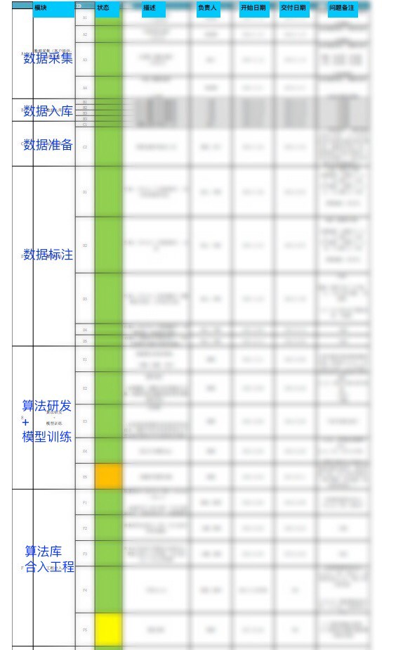
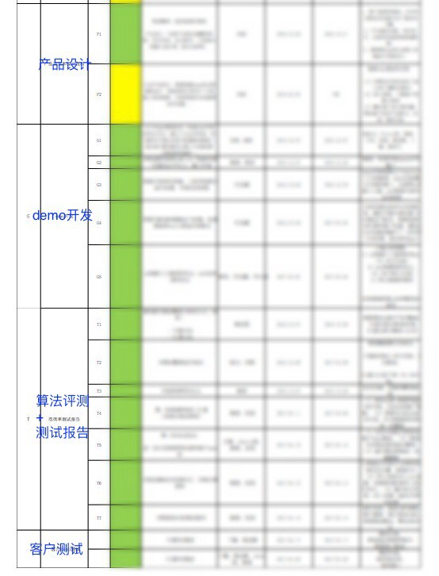

4.13. AI PM的隐性工作¶
4.13.1. 清晰界定¶
面试官希望你有“能力”，可能很多人就理解为要有优势；再比如，面试官希望你懂做直播，可能就被理解为做“网红”带货。同样，还有很多人认为对电商运营很懂，因为平时自己也帮朋友出主意，帮朋友做一些淘宝店铺的运营，但是真正的工作远比这些要复杂。 2
4.13.2. 隐性部分¶
「产品经理的工作包括显性部分和隐性部分。为外界所知的显性部分，通常其实只占这个工作的十分之一左右；不为外人道的隐性部分，则占了这个工作的十分之九甚至更多。」
要掌握 AI PM 的软技能，要先关注工作本身和产品的细节。 1
4.13.3. 隐性工作 – AI¶
一般来说，偏 AI 的隐性部分的工作主要包括以下几个方面：
制定产品策略和算法能力的边界；
梳理算法研发前的准备阶段的工作流程；
理解数据标注和算法原理的基本常识。
4.13.3.1. 制定产品策略和算法能力的边界¶
我最近在上一个策略产品课，对 AI PM 的工作范围划分有了新的认知。AI PM 除了做项目管理、设计用户可感知的功能以外，还需要制定用户不可感知的、返回数据的策略逻辑，例如：搜索策略、分析策略、推荐策略、展示策略等。
下面以我做的产品的校对功能为例，思考 AI PM 在制定策略和分析算法能力边界中的常见问题。
（1）首先，在错误列表的展示策略中，应该给用户返回什么类型的「错误」？
算法需要检查出哪些类别的错误，明显的错别字当然属于错误，但是对于火星文、不规范中英文混合、口语经常出现的句式杂糅、新捏造词汇、数字格式乱用等情况，也属于错误的范畴吗？
这些「错误」是否是用户关心的错误？是否全部都提示给用户？
这些「错误」要基于什么标准下的语言规范，来划分错误的层级？
有些经常无法被检查出来的「上下文语义错误」，如何制定这些规则？如果没有固定的规则，是否有其他的处理方式？
（2）应该提供何种操作体验？
在文中出现相同错误时，「批量修改」和「单次修改」中应该选择哪种方案？
实时检查文章时，用户在打字过程中即可看到实时检测结果。可是如何判断用户的输入状态，是输入全篇文章、一段还是一句？此外，该如何设定实时检查的间隔时间，不同时间的设定会有什么影响？在分析各种影响因素后，再选择合适的方案。
（3）系统对用户操作应作出怎样的反馈？
对检查出来的错误词，算法匹配了正确词用于替换或修改参考。此功能是否提供多个修改词？
错误词被用户首次修改后，系统是否记住用户的此次修改？还需要考虑的是，当该词在其他语境中出现且并不是错误时，又该如何处理？
4.13.3.2. 梳理算法研发前的准备阶段的工作流程¶
如果是从 0 到 1 的产品，在算法研发之前，首先需要收集语料库或标注数据，用于算法工程师做模型训练。
在 AI PM 接到需求的准备阶段，需要将任务安排到每个人的执行细节。但梳理 AI 工作流程或拆解任务的方法，并不能在资料中学到。刚开始我也只能摸爬滚打地不断尝试，后来有了一定的经验后，才制定了适合团队工作的标准流程。
下面举例说说，为了提升产品校对功能的算法精度（召回率），我对工作任务进行了拆解。主要采取扩大规则库的手段，去收集语料库、数据处理、制定规则等。根据这个目标，具体的拆解步骤如下：
首先根据需求，要确定需要的语料库类型以及购买渠道。（这活是由我和算法工程师一起讨论确认的）
将购买好的数据入库到云端 or 其他保存数据的地方，比如移动硬盘。（这是由另一位数据同事负责）
数据下载完成后，查看具体数据，分析整理有用数据和需要清理的无效数据。（为了不浪费算法工程师的时间，基本是我看数据做的分析）
数据预处理：处理垃圾语料、整理文件、对数据进行分类。（查阅 NLP 语料库处理方式的方法 + 和算法工程师讨论方案后，我做的整理）
提取本次任务所需语料库，数据清洗，过滤杂质（技术同事根据我整理的规范，写脚本处理）
算法如何利用这些数据制定语言规则或训练不同的模型。（这就不关我的事儿了）
训练集抽样标注（PM 写标注文档，抽时间和标注团队对数据抽样标，能看出很多细节问题，及时反馈给算法工程师处理）
测试集标注（同上）
算法跑测试脚本后，生成评测报告（和算法工程师讨论需要哪些指标，以及测试方法，主要由算法工程师来定）
测试报告分析结果（算法和 PM 从技术和产品的角度分别写测试结果的分析报告）
根据分析报告，将实验结果中有用的规则（符合用户场景的常见错误）写入规则库。（这部分主要是算法工程师负责）
算法版本升级，产品更新（PM 负责产品版本管理，写发布报告）
将数据处理方法和标注-测试方法等写到资料仓库的 wiki 的 handbook 手册中，方便下次遇到同样任务时，可以复用流程。
4.13.3.3. 理解数据标注和算法原理的基本常识¶
大部分的 PM 其实不需要了解这些，数据标注知识对有标注需求的 AI PM 或技术底层的 AI 算法 PM 来说，更有用些。
插一句题外话，入门 AI PM，最简单就是数据标注，因为可以通过数据来理解基本的算法原理和常识，PM 从项目具体行动中去做，去学，才能理解背后的规则。 这里以我在商汤做的 CV 标注为例：刚开始写标注文档的时候发现，标注团队会问我很多问题。因为刚开始我并不熟悉标注和算法原理，因此我需要花很多时间去咨询算法工程师，理解每一个特殊的 case 要怎么标。这样来回沟通不仅浪费大家的时间，也导致由于数据标错而产生的多余返工时间。所以，理解原理能帮助产品做得更好。下面举两个标注的例子：
（1）OCR 营业执照图片标注出现模糊情况，AI PM 先要理解机器识别和肉眼识别的能力区别。在不理解的情况下，标注文档会写不清楚，导致标注员不知道怎么标，甚至出现数据大批量标错，算法的质量下降 or 测试结果不准确的后果。
（2）真实场景中会有各种情况的数据，每种情况都需要写清楚数据的类别与问题边界，同时给出每种类型的标注的详细定义。如果标注定义不清晰，将会影响算法的精度。
4.13.4. 隐性工作 — PM¶
一般来说，偏 PM 的隐形部分的工作主要包括以下几个方面：
控制项目进度，按时交付产品；
团队协作与沟通；
产品开发周期中的问题处理。
4.13.4.1. 控制项目进度，按时交付¶
首先 AI PM 要根据需求背后的用户目标排需求优先级，制定相应的解决方案。在解决方案落地的过程中，梳理不同部门和产品结构的关系，向各部门提出需求，控制整体的项目进度，提前预测产品在开发周期中可能面临的风险。
以我之前在商汤做的大型 AI 项目为例：当时的情况是，客户要求的时间很紧，客户的测试通过指标是关键字段的识别准确率不低于98%。根据这个目标，我梳理了工作流程后，将各个部门的工作流程和完成进度都严格控制在下图的这张进度表上，并且每日跟进具体问题，及时应对风险。
 
- 一般来说，toB 的 AI PM 要非常严格地控制项目进度，按时交付产品；同时需要在项目管理中的对风险做出预判，因为从设计到开发的过程中会遇到各种问题，就需要AI PM全程跟踪和参与，甚至身体力行地去做一些事推进整个项目进展。
额外提一下，有时 AI PM 要同时处理多个问题，注意控制自己的时间分配；还需要清楚在什么阶段要做什么事，哪些必须提前做，哪些可以后置；项目管理的目的是保证产品的进展，确定按时交付。